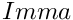

|
PSCF v0.8
|
3.2.2 Parameter Files for pscf_fd (Prev) 3.2.3 Parameter files for pscf_pgNd (Next)
An example of a parameter file for the program pscf_pc3D is shown below.
The structure of a pscf_pcNd parameter file is shown below in skeleton form below.
The purpose of each subblock and parameter in the main System block is as follows:
The Mixture and ChiInteration subblocks are identical in structure to those used in the pscf_fd program, and so are not described separately below. See the documentation of the parameter file format for that program (3.2.2 Parameter Files for pscf_fd) for discussions of the formats for these two blocks.
The Domain block contains information required to describe both the unit cell of the periodic structure and the regular mesh that is used to discretize fields within each unit cell.
An example of the format of this block is shown below:
The unitCell, mesh and groupName parameter lines are discussed separately below.
The line that begins with the label unitCell contains information required to specify an initial value of the crystal unit cell. The data on this line contains a string that specifies the desired crystal system followed by one or more unit cell parameters. The format is thus
where m denotes the number of independent parameters required to describe a unit cell of the specified crystal system. The allowed values of the crystalSystem string for a 3D structure currently include "cubic", "tetragonal" and "orthorhombic". The cubic crystal system used in the parameter file only requires one unit cell parameter, which is the length of each axis of a simple cubic unit cell.
The unit cell parameter that is input in the parameter file is actually used only within an algorithm that constructs a set of symmetry adapted Fourier basis functions, and then discarded. Values for the initial unit cell dimensions of a system for which we wish to solve a self-consistent field problem are are obtained later by reading a file that contains an initial guess for the monomer chemical potential fields (w-fields), which also contains the corresponding unit cell dimensions.
The line that begins with the label "mesh" specifies the number of grid points along each direction of the uniform spatial mesh used to discretize an unit cell. The format is
where D is the dimension of space (i.e., the number of periodic directions), and N[i] is the number of grid points along axis number i, for i=1,...,D.
The line that begins with the label "spaceGroup" specifies a label for the crystallographic space group for the desired structure. The format is
in which groupName denotes a string that identifies the desired space group.
Each of the allowed values of the groupName string corresponds to a modified version of the name of the space group, as listed in the international tables of crystallogrphay. In the above example, the groupName string I_m_-3_m is a modified form of the name  for the space group for a BCC lattice. Space group names used here are derived from the names in the international tables, modified by the use of underbars to separate distinct symbols, replacement of overbars by a hyphen (-) prefix, and a few other systematic modifications.
Descriptions of all crystallographic space groups are distributed with PSCF as files the directory pscfpp/data/groups directory. Files containing descriptions of 1, 2, and 3 dimensional groups are placed in subdirectories 1/, 2/, and 3/, respectively. The description of each space group is in a single file with a file name corresponding to the label used in the parameter file. Each space group description file contains a list of all symmetry operations in the group, in which each symmetry operation is represented as a matrix with integer elements, which represents a point group operation, and a vector of rational (i.e., fraction) coordinates, which represents a translation by a fraction of a unit cell. The conventions used to construct the group names from international table names (such as the use of underscore symbols to separate symbols) are designed to allow each space group name to be converted into a string with no white space that is a valid file name for a unix file system. The names used in the older Fortran PSCF program were similar except for the use of space rather than underscores to separate symbols.
The AmIterator block provides parameters required by the Anderson-Mixing (AM) iterator that is used to solve the nonlinear self-consistent field (SCFT) equations. An example of the format is shown below:
Parameter maxItr is an integer whose value gives the maximum number of allowed iterations that will be attempted in the search for a solution.
Parameter epsilon gives the desired tolerance in the solution of the SCFT equations. The iterative loop exits if the maximum error drops below epsilon or if the number of iterations exceeds maxItr.
The value of maxHist gives the number of previous trial solutions that will be retained in memory by the Anderson-Mixing (AM) algorithm. The AM algorithm uses knowledge of previous trials to guide the search for a solution, but only makes use of the previous maxHist trials when the total number of iterations exceeds maxHist.
The optional errorType parameter specifies the error criterion used for determining termination. It can accept three different values: "maxResid", "normResid", and "relNormResid". By default, it is set to to "relNormResid". The "maxResid" type uses the maximum element of the vector of residuals to assess error. The "normResid" type uses the L2 norm of the vector of residuals to assess error. The "relNormResid" error type uses the L2 norm of the vector of residuals divided by the L2 norm of the vector of omega field elements, as in Stasiak and Matsen, EPJE, 2011.
The optional isFlexible parameter is a boolean variable that can be used to enable or disable optimization of the unit cell. Setting isFlexible = 0 gives a rigid unit cell with dimensions that remain constant during iteration. Setting isFlexible to 1 instructs the program to adjust the unit cell parameters during iteration so as to minimize the free energy. If not set, isFlexible is set to 0 by default.
The optional scaleStress parameter is the degree to which stress residuals should be weighted against self-consistent field residuals when calculating the error and updating the fields. The default value of this parameter is scaleStress = 10.0. Setting scaleStress only has an impact of isFlexible is set to 1.
3.2.2 Parameter Files for pscf_fd (Prev) 3.2 Parameter Files (Up) 3.2.3 Parameter files for pscf_pgNd (Next)